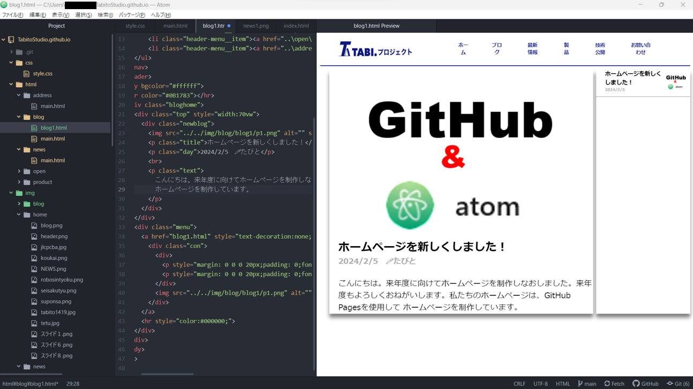

ホームページを新しくしました！
2024/2/5 🖊たびと
こんにちは。来年度に向けてホームページを制作しなおしました。来年度もよろしくおねがいします。私たちのホームページは、GitHub Pagesを使用して ホームページを制作しています。
↑制作風景はこんな感じですね。Atomを使用しています。作業しながら、どのように表示されるかリアルタイムで表示されるし、ボタン一つでGitHub内のHTML ファイルなどを更新できるのでとてもおすすめです。ホームページの制作とブログの更新頑張っていきます！今回は、ブログの表示確認がメインですので以上です。